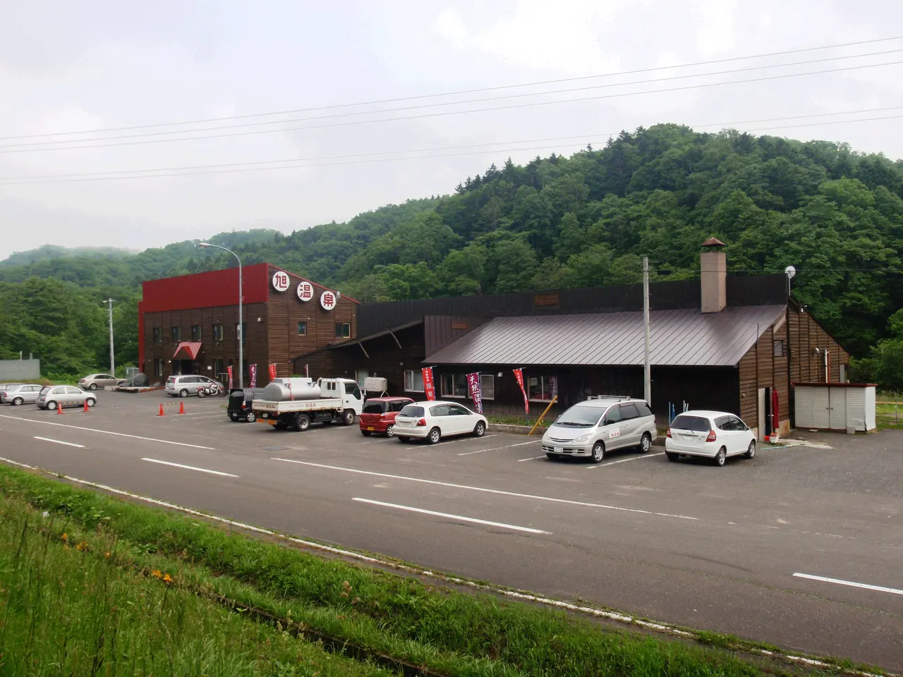
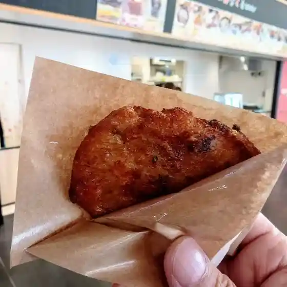
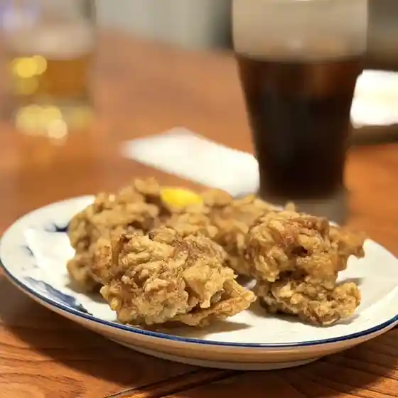
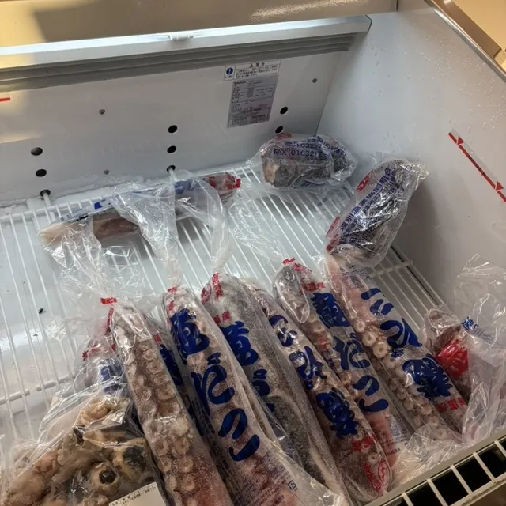
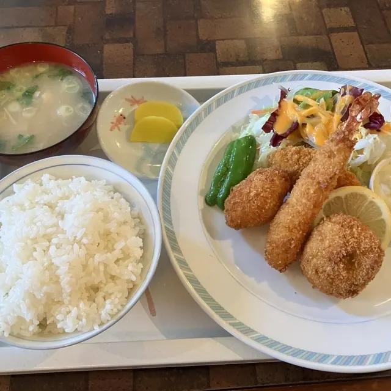
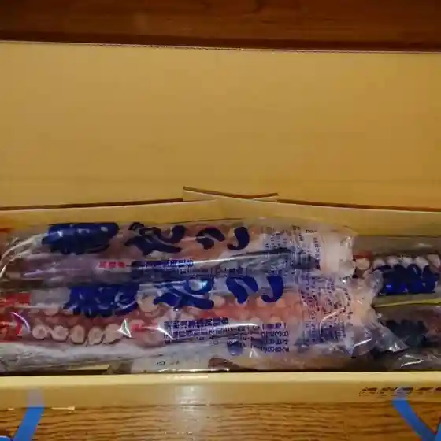
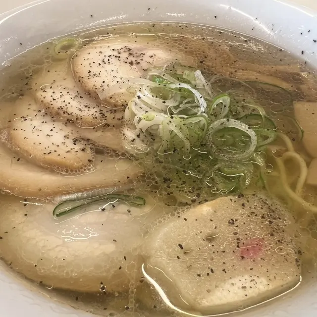

Enbetsu
Enbetsu · Hokkaido
Enbetsu
Highlighted on the Hokkaido map.

Stay
旭温泉
Asahi Onsen
Onsen lodging in Enbetsu, Hokkaido.
栄館
Sakaekan
Inn in Enbetsu, Hokkaido.
ホテル ノーザン・ライト
Hotel Northern Light
Hotel in Enbetsu, Hokkaido.
Dining
レストラン みなくる

Resutoran Minakuru
ノーザンライト

Noozanraito
味のどん兵衛

Aji Nodon Bee
栄館

Sakae Kan
道の駅 えんべつ富士見

Michi No Eki Enbetsu Fujimi
メルヘン

Meruhen
遠別漁業協同組合

Enbetsu Gyogyou Kyoudoukumiai
麺屋 232

Men Ya 232
北川誠菓堂
Kitagawa Makoto Ka Dou
いながき旅館
Inagaki Ryokan
食工房 美味
Shoku Koubou Bimi
旭温泉
Asahi Onsen
ふじみるキッチン
Fujimiru Kitchin
セイコーマート 遠別本町店
Seikoomaato Enbetsu Honchou Mise
Ichi
Ichi
ハヤシ屋野村菓子舗
Hayashi Ya Nomura Kashi Ho
焼肉景福苑
Yakiniku Keifuku En